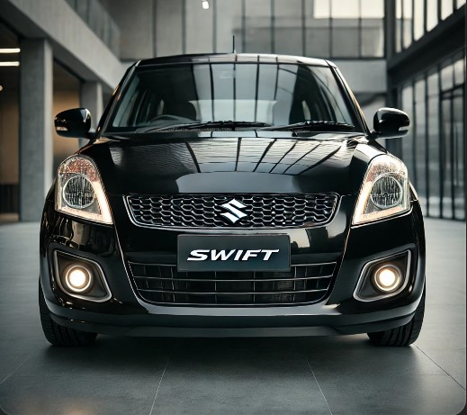

Home
Mezzi
I Nostri Mezzi
Esplora i mezzi utilizzati dalla Misericordia per offrire un servizio efficiente e di qualità.
Macchine
FIAT IDEA

SUZUKI SWIFT
Veicoli Per Trasporto Disabili
FIAT DOBLO'
FIAT DUCATO
Ambulanza
Fiat Ducato Ambulanza
×